Drowned in Yesterday
My first Game Jam fell on my birthday. I stayed up for most of the 48 hours building gameplay for our Unity 6 side-scrolling puzzle game.
We made it for CiGA Game Jam 2026. The theme was Anchor, and I was the team's only gameplay programmer.
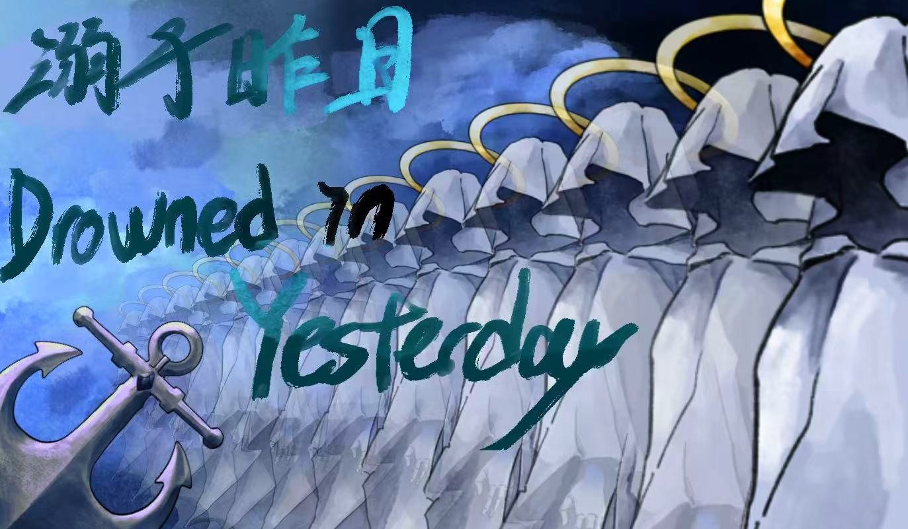
The anchor we planned
We started with a ship and the story of a sailor and captain. I wanted the anchor to show the rising water through rust. At the highest point, the first drowning would reveal how the player died and send them back to try again.
The team kept revising the route and the puzzles. We ran out of time to implement the anchor and the full sequence that went with it.
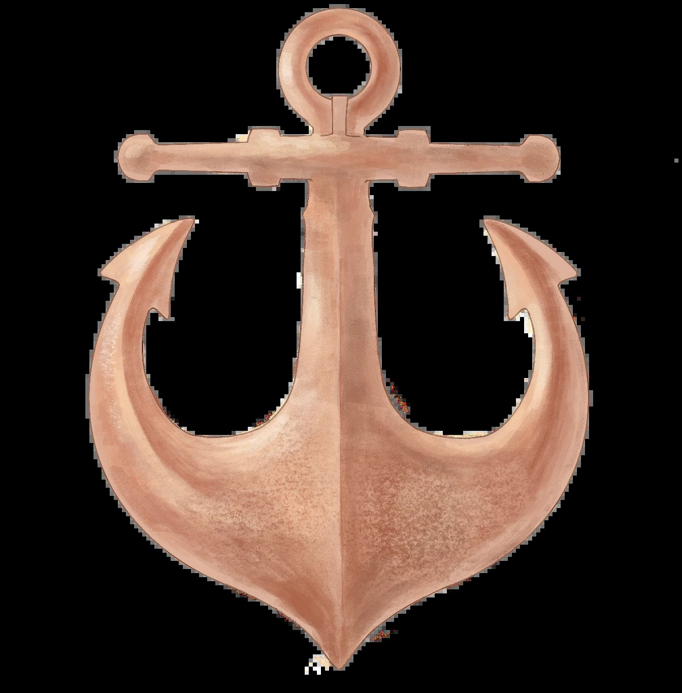
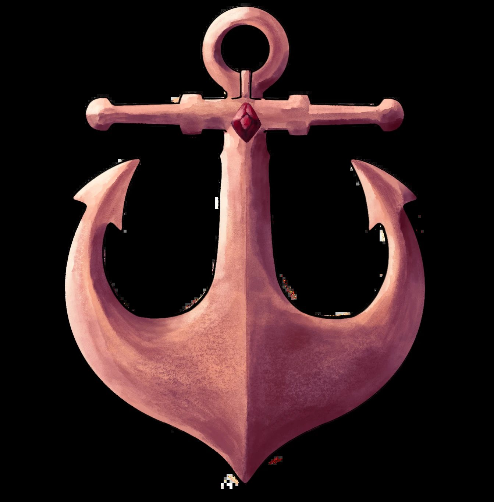
Two anchor designs by a teammate. Both remained concept art.
Project Overview
A ferryman enters a sinking ship to guide a restless spirit to the afterlife. The sea is swallowing the decks, and the only way to reach her is to piece together what remains of her past.
In the current main level, players climb between decks, solve puzzles, and open new passages to collect five memory bubbles before the water cuts off parts of the ship.
The jam theme, Anchor, links the spirit's attachment to her collection with the time anchor that binds the ferryman to the ship.
- Event
- 2026 CiGA Game Jam
- Genre
- 2D puzzle adventure
- Engine
- Unity 6 / URP 2D
- Team
- Seven contributors
- My role
- All gameplay programming
Story · A Spirit Anchored to Her Collection
The team wrote the spirit's backstory as five first-person memories. The ferryman searches the ship for clues to what she could never let go.
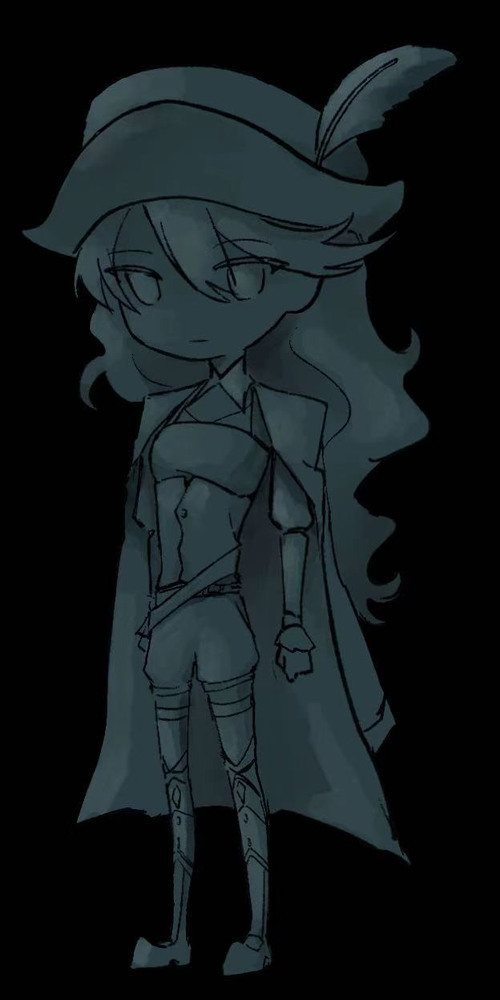
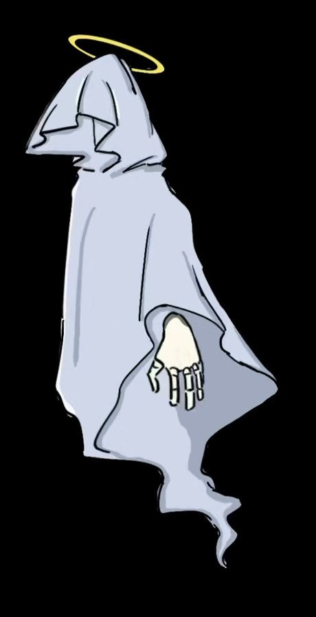
Searching the lower decks
The ferryman searches the sinking ship for five memory bubbles. The lower deck is the first to flood.
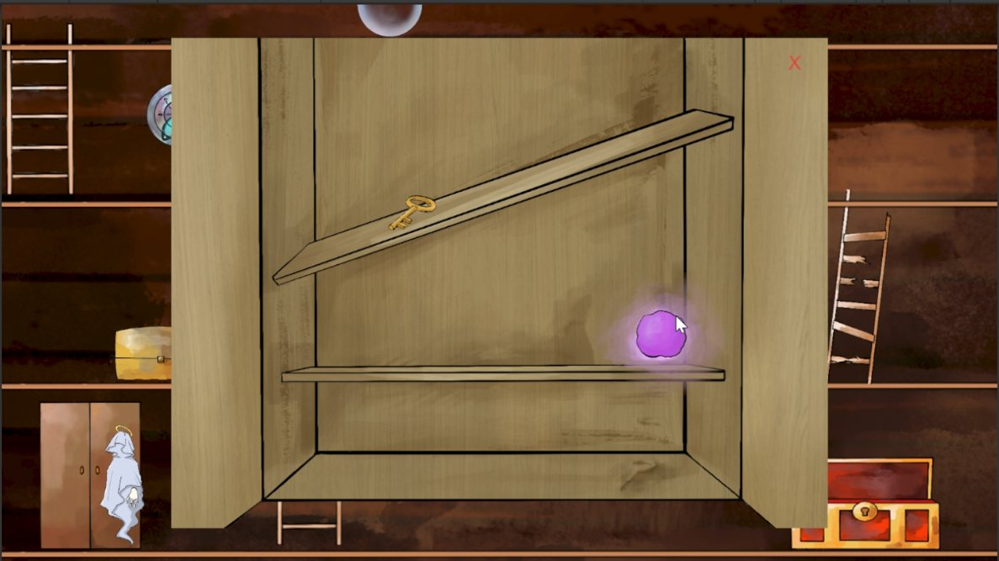
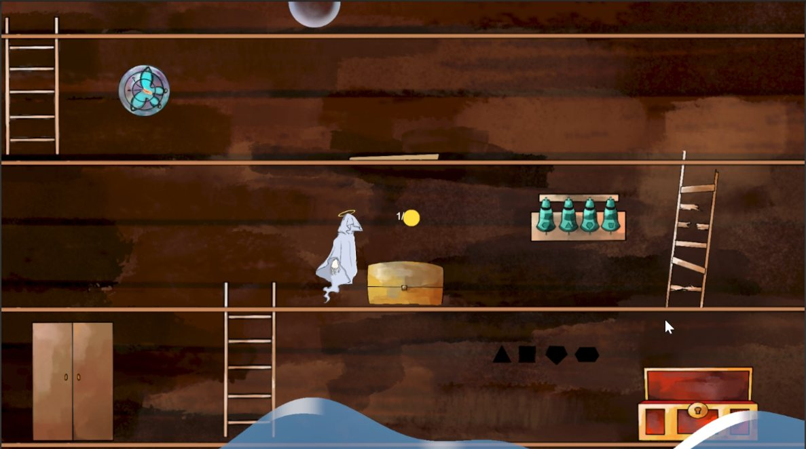
Solving the bells and the rings
The puzzle panels lock movement, but the water keeps rising behind them.
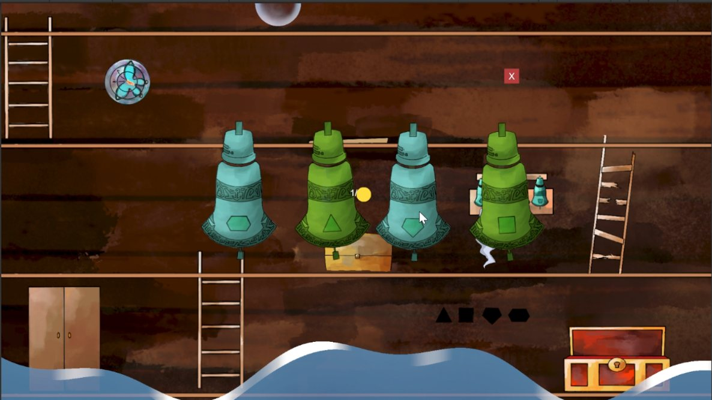
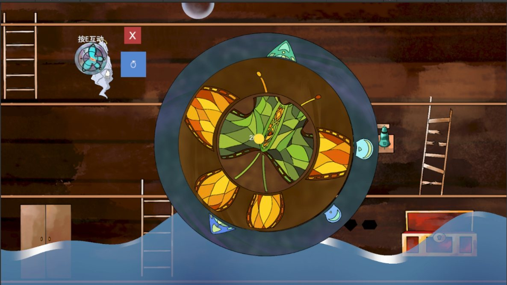
Letting the water lift the chest
The water uses a 120-second rise parameter. It cuts off the lower deck and carries the red chest toward the upper platform.
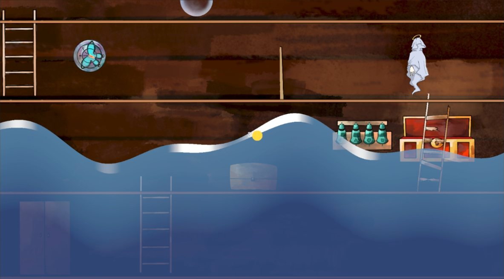
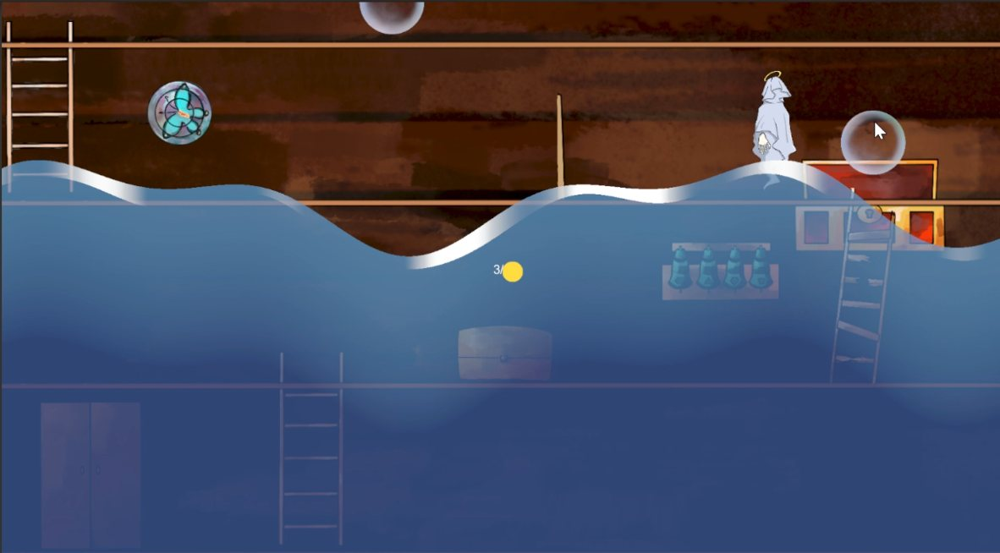
Original Design · The First Drowning
Death screen→Black screen and internal monologue→Return to the start→Unlock the timeline
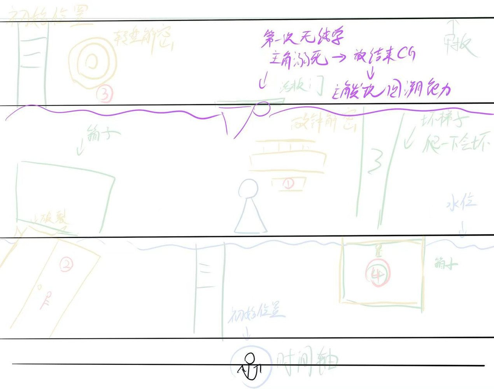
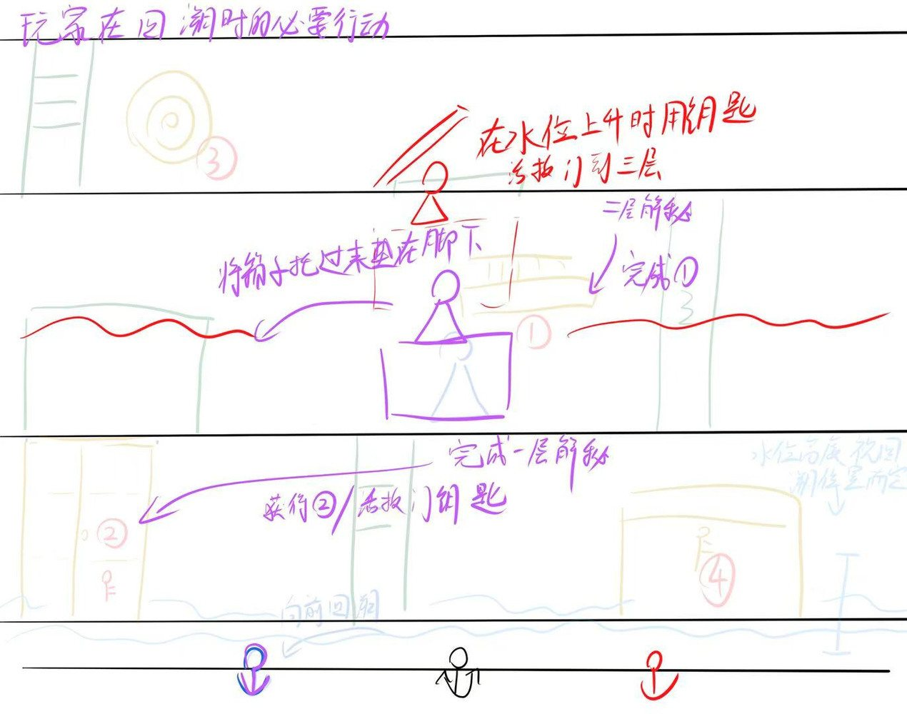
My Contribution and Implementation
I handled all gameplay programming: player controls, world interactions, water, puzzles, inventory and HUD, and the flow from the title screen to the ending.
A shared interaction entry point
Entering an interaction zone shows an E prompt. UnityEvents route the input to a puzzle, pickup, or door. Modal panels lock movement while they are open.
Match drowning to the visible waterline
The C# water check mirrors the shader's two-wave calculation and pixel quantization so the head-submersion test follows the visible, stepped surface.
Connect puzzles, rewards, and the ending
Puzzle completion sends an event. Scene configuration decides what to spawn. Bells award a memory bubble, rings award a key, and collecting five bubbles triggers the ending fade.
Tools and team
I built the gameplay in Unity and C#. I used Claude Code in VS Code with DeepSeek as the backend model. Other team members created the art and audio.
From Prototype to Main Level
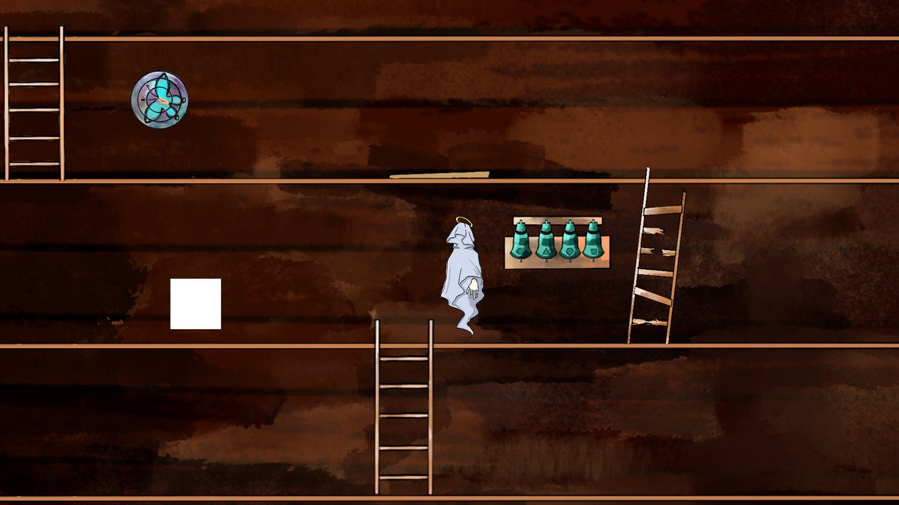
Fixing character jitter
Animation and Rigidbody2D both changed the character's position. I moved animation to a visual child and removed its vertical position curves, leaving movement to the rigidbody.
Making the open trapdoor passable
The floor collider still covered the opening after the door swung. I split the floor collider to leave a gap and switched the door collider to a trigger when open.
The trapdoor spec documents the key check and collider change. The closet spec reuses the same E-key trigger and inventory flow for pickups.
Pacing Sketch and Implementation Scope
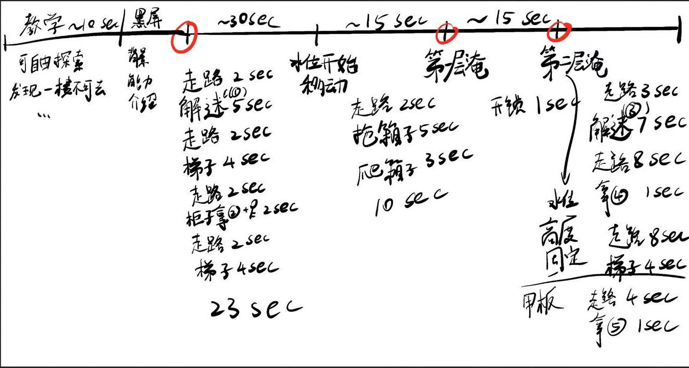
Key notes in the sketch
~10 s tutorial → blackout and ability introduction → ~30 s before the water moves → ~15 s to flood deck 1 → ~15 s to flood deck 2, then the water holds.
The team also estimated time for walking, climbing, moving a crate, and solving puzzles.
Current Unity main level
Rising water, floating chest, two puzzles, five memory bubbles, and an ending fade. Drowning reloads the level.
Standalone prototype
SceneWater tests object snapshots and checks restoration against the water. Dialogue code exists outside the main level flow.
Unfinished narrative flow
The first-death monologue, timeline unlock, and reconstruction of the spirit's life in chronological order remained part of the design.
What broke during the jam
The scope kept changing while I was writing gameplay code. I did not plan the prefabs and their responsibilities early enough, so small interactions became hard to test by themselves.
The bell and ring panels share a movement lock, while the water advances independently. If I missed a close path, I had to work back through several scripts to see why the player was still locked.
AI-assisted coding helped me get started, but the pieces I had not thought through were harder to read and fix later.
What I would do in the next 48 hours
Settle the playable route on the first night. Build one interaction at a time, decide what owns its state, and review the code before the next feature depends on it.
Puzzle input and the water clock
// Bell puzzle: opening the panel
isOpen = true;
currentIndex = 0;
PlayerController.InputLocked = true;
// Bell puzzle: closing the panel
isOpen = false;
PlayerController.InputLocked = false;
// Game manager: water advances independently
if (!waterStopped)
{
elapsed += Time.deltaTime;
float level = Mathf.Clamp01(
elapsed / waterRiseDuration);
if (waterController != null)
waterController.waterLevel = level;
// ...
}